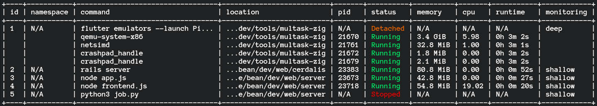

Multask is a daemoniser built to simplify & organise your developer environment.
Designed to organise projects which need processes running at the same time with flexible resource limits for scaling.
curl -s "https://raw.githubusercontent.com/AFreeChameleon/multask-docs/refs/heads/master/install/scripts/linux.sh" | bash
curl -s "https://raw.githubusercontent.com/AFreeChameleon/multask-docs/refs/heads/master/install/scripts/osx.sh" | bash
Multask's newest version is currently not supporting FreeBSD. So in the meantime the older version can still be used. here
Bash & ZSH officially supported.
powershell -c "irm https://raw.githubusercontent.com/AFreeChameleon/multask-docs/refs/heads/master/install/scripts/win.ps1|iex"
After installing the program run:
> mlt create "ping 8.8.8.8"
The command's output won't be shown in the console, but instead the message:
[SUCCESS] Task started with id 1.
No output from the command will be shown in the console because the process has been daemonized, and all output from the task will be stored.
To view the task's logs run:
> mlt logs 1
To see all tasks you've created, run:
> mlt ls
It will output a table like this:
+----+-----------+--------------+--------------------+-----+---------+--------+-----+---------+------------+
| id | namespace | command | location | pid | status | memory | cpu | runtime | monitoring |
+----+-----------+--------------+--------------------+-----+---------+--------+-----+---------+------------+
| 1 | N/A | ping 8.8.8.8 | /user/test/multask | N/A | Stopped | N/A | N/A | N/A | shallow |
+----+-----------+--------------+--------------------+-----+---------+--------+-----+---------+------------+
id - how you'll be referencing this task in other commands.
namespace - another way to reference this and other tasks.
command - what command was run.
location - what folder/directory the command was run from.
pid - process id in the OS.
status - status of the command, either 'Running' or 'Stopped'.
memory - amount of memory the task is using.
cpu - percentage of CPU the task is using.
runtime - how long this command has been running for.
monitoring - how thorough the task is looking for potential child processes, 'shallow' is the default, 'deep' is for thorough searching.
To see the full list of commands and args, run:
> mlt help
Or, for each individual command, run:
> mlt <command e.g create> -h
To stop the task, run:
> mlt stop 1
To start the task, run:
> mlt start 1
To restart the task, run:
> mlt restart 1
To edit the task's namespace or resource limits, run:
> mlt edit 1 -c <cpu percentage> -m <memory usage> -n <namespace>
To delete the task and all logs, run:
> mlt delete 1
If multask isn't working, you can run:
> mlt health
To see what's wrong with it. This is mainly for debugging purposes.
Or you can run the command that fails with the -d flag to enable debug mode.
This is a very early alpha and while this has been tested on a few environments, issues on other environments (especially using shells other than bash and zsh) are untested and may have some breaking issues.
So please report any problems you run into (or feature requests) here.